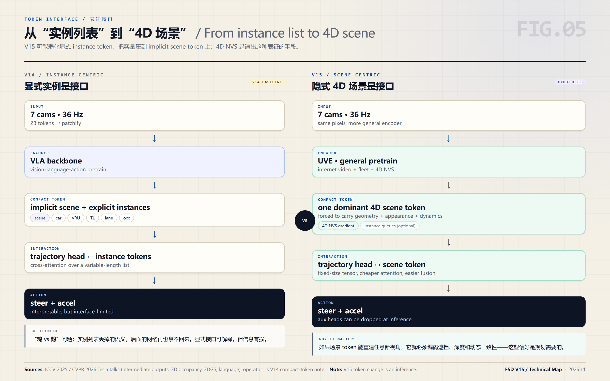
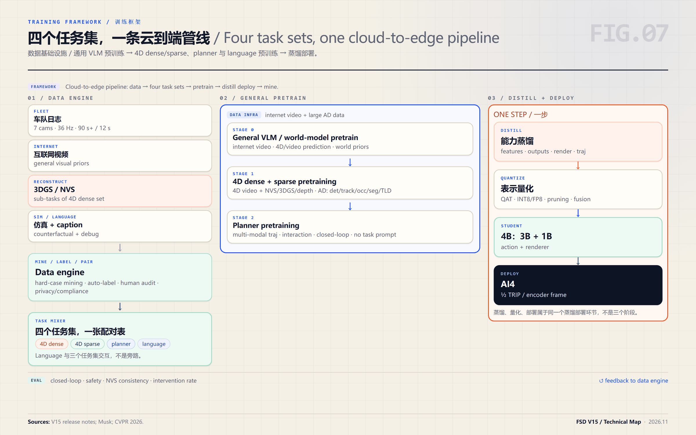
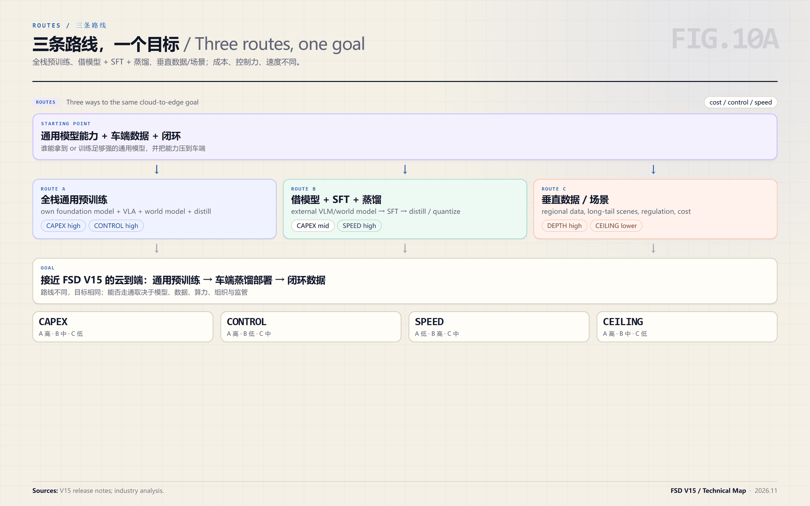

- 周末 FSD V15 发布之后，这两天大家看了很多视频，下午相互对了一下各自的信息，有一些共识性的结论，管中窥豹看一下 FSD V15 的改进和实现方式。
- 这个文章更加着重于框架设计和实现层，表现层可以自己去 YouTube 看。
本文纯属个人意见，仅作记录和参考，如有雷同纯属意外；如果读者有不同意见，那一定是读者对；如果碰巧实现跟某些公司的方案相同，纯属运气。
一次外部的管中窥豹
V15 改了什么
- 视觉编码器升级，Musk 称其为 Universal Vision Encoder（UVE），并在 FSD、Robotaxi、Optimus 之间共用；
- Reality View 用生成式新视角替代旧的可视化管线；
- Musk 提到 3B 动作模型 + 1B 渲染模型、18 Hz 特征、36 fps 目标。
通用大模型预训练决定驾驶能力
- V15 把通用视觉-语言模型（Vision-Language Model，VLM）预训练、VLA（Vision-Language-Action）预训练和车端蒸馏部署连成一条线。
- 通用大模型预训练决定了 V15 的驾驶能力；
- 它的意义不在“驾驶专用 pretrain 又加了几个任务”，而在通用大模型能力向车端的迁移。
V15 发了什么
驾驶网络的升级
- 新视觉编码器；
- 路牌、小动物、路面杂物、铁链、坑洼、深积水识别改进；
- 学区/恶劣天气速度控制；
- 测速摄像头前减速；
- 自行车架模式；
- DMS 支持帽子/墨镜；
- 导航与泊车路线学习。
- 官方称关键干预率提升 25 倍（发布说明报道），但这个口径需要第三方数据验证。
车机上的生成式实景
从车顶虚拟相机实时生成周围世界；不是摄像头回放，也不是游戏引擎贴图；官方称是“novel view synthesis”，由同一个端到端驾驶模型在开车的同时渲染。支持点击目标点、全屏/分屏。
新视觉编码器“用数百万条互联网视频训练”，并在 FSD、Robotaxi、Optimus 之间共用。通用大模型预训练决定了 V15 的驾驶能力。
从 V14 到云到端
V14 采用预训练 → SFT → 后训练三个阶段。三者属于同一个模型，不是三个独立模型。

V14 面对的“维度灾难”
- 按特斯拉在 ICCV 2025 / CVPR 2026 的公开口径（CVPR 2026 演讲整理）：7 路摄像头 × 36 Hz × 500 万像素；
- 原始 clip 90 秒以上，训练裁到约 12 秒，按 5×5 像素 patch 折算，输入约 20 亿 token；
- 再加上导航、100 Hz 运动学、48 kHz 音频。
- 输出只有 2 个 token：转向和加速度。
- 端到端要学的，是 20 亿 → 2 的因果映射。
因此 V14 在中间塞入大量“可解释信号”：3D 占据与流、车辆/行人/骑行者、交通灯与标志、道路边界与车道、限速、交互概率，以及自然语言推理。它们既是监督，也是安全审查的抓手。
V14 的 compact token
- V14 的 compact token 包含两部分：implicit scene token（隐式场景）和 some explicit instance token（显式实例，如车、VRU、交通灯、车道）。
- Trajectory head 通过 cross-attention 与这些 token 交互，输出多模态轨迹。
它为什么有效
显式实例可解释、易监督、易做安全规则；SFT 把人类驾驶的“价值判断”压进策略；post-train 用 RL/闭环修 reward。三者各司其职。
它的代价
实例列表是有损的：它把场景表达成实例集合，非实例语义会丢失；scene token 在重建中是无损的。
- V14 留下的是“中间监督”这条路：让黑箱在输出动作之前，先输出一堆可被检查的东西。
- V14's real legacy is intermediate supervision, not a particular head.
V15 换了接口：实例列表 → 4D 场景 token，预测下一帧 → 渲染新视角，三段式 → 通用预训练 + 蒸馏部署。

单独看这条管线：VLM 预训练 → VLA 预训练 → 蒸馏部署
这条管线分三步。
- 数据基础设施 / VLM 预训练（云）：互联网视频 + 大量自动驾驶数据 + 仿真。Grok 的训练数据规模很大，并加入了大量自动驾驶数据；这与 OpenAI 把 robotics team 重组进 agent 以整合数据类似。Universal Vision Encoder（UVE）属于 Grok 体系，并经过多级蒸馏后上车。
- VLA 预训练：VLA 是 Vision-Language-Action，把视觉/语言接到动作，包含 multi-modal trajectory prediction、agent prediction 等 planner 子任务。这一层决定通用能力能不能变成驾驶行为。
- 蒸馏部署（车端）：把云端教师压成 4B 车端图（约 3B 动作 + 约 1B 渲染），再做量化、剪枝、算子融合和 AI4 部署。蒸馏和部署是同一个环节，不是“先蒸馏、再部署”两件事。
一个编码器，两条解码路径
V15 架构：Universal Vision Encoder（UVE）共享，约 3B 动作模型 + 约 1B 渲染模型，18 Hz（Musk）。

- 前向结构：Forward input → UVE → tokenizer → 训练四大任务集；
- 推理只保留 trajectory + lightweight NVS。
- 3B 动作模型与 1B 渲染模型都由 UVE 蒸馏得到。

UVE：Universal Vision Encoder，通用的“视觉节拍”
- UVE（Universal Vision Encoder）以 18 Hz（Musk） 输出特征序列，FSD、Robotaxi、Optimus 共用同一个编码器。
- 它用数百万条互联网视频做通用视觉预训练，再在车队数据上对齐驾驶。
- 编码器因此不只对“驾驶相关物体”敏感，也对通用世界（材质、光照、动物、杂物、遮挡）敏感。
蒸馏：动作模型与渲染模型如何共享 UVE
- 3B 动作模型和 1B 渲染模型由 Universal Vision Encoder（UVE）蒸馏得到，共享同一份 4D scene token。
- 渲染器用这份场景表征条件生成新视角，渲染损失反传回 UVE，迫使特征同时满足两件事：
- 对动作有判别力：该影响刹车的细节不能丢；
- 对渲染有一致性：遮挡、深度、动态、光照要能在新视角下自洽。
共享表征的价值不只是多一个输出，而是多一个约束。
1B 渲染器：conditional mean-flow 是什么
- 渲染器是一个 1B 的 conditional mean-flow 模型（mean-flow 是 flow matching 的变体，学习区间平均速度场）。
- 它以 4D UVE scene token 为条件，给定任意相机位姿（any view）渲染新视角。
- 所谓“上一帧”不是渲染器输出，而是上一帧 scene token 与当前帧 UVE 特征融合得到的 4D scene token；
- 模型在 token 空间预测变化量，再解码到当前视角。
调度上，Musk 提到目标 36 fps；渲染器按单帧或小 chunk 差分生成。
“½ TRIP”是一个 TRIP 加速器的一半，不是“半颗 AI4”。它吃的是剩余算力，不是主控制环的预算。
车端推理图：3B 动作 + 1B 渲染 = 4B
车端动作模型
规模: 3B
证据: Musk 帖文
说明: 输出轨迹/控制，带辅助头。
车端渲染模型
规模: 1B
证据: Musk 帖文
说明: NVS decoder，conditional mean-flow。
车端推理图合计
规模: 4B
证据: 相加
说明: 3B + 1B = 4B。
不是驾驶专用预训练
V15 的变化不在“自动驾驶又多了几个预训练任务”，而在通用大模型（VLM）预训练：通用大模型预训练决定了 V15 的驾驶能力，并通过 VLA 预训练和蒸馏部署进入车端。
VLM 已经在云端做世界模型
- 视频生成、4D 场景生成、世界模型这些能力，在通用 VLM/视频模型里已经存在，并不是自动驾驶独有的新任务。
- 对自驾来说，更难的环节是把这些能力变成可车端部署、可闭环验证、可安全兜底的东西。
- 特斯拉如果做成了，价值不在“发明了 4D video”，而在“把通用模型的预训练能力接进了车端”。
VLA：视觉/语言到动作
VLA 把视觉/语言意图接到动作。在“通用预训练 → 车端蒸馏部署”的框架里，VLA 负责把共享表征变成 planner 的轨迹与动作。
Pretrain 拆掉 task prompt
FSD V15 的 pretrain 拆除了 genception 式的 task prompt。所有任务都作为默认任务一起训练，不再用 prompt 指定当前任务。
- 模型因此更 compact：没有 task prompt token，也没有按 prompt 切换的条件分支。
- 多层 DiT 始终在同一个任务分布上训练，不会因为 task prompt 变化发生大的 task distribution 移动。
一种可能是 FSD V15 去掉了 SFT，只使用 pretrain：预训练直接覆盖驾驶行为，不再单独设一个 SFT 阶段。这一点在 §07 标为待讨论。
数据基础设施与预训练
互联网视频 + 大量自动驾驶数据 + 仿真；VLM/视频/世界模型提供视觉、物理常识和生成能力。
VLA 预训练
把通用表征接到驾驶动作、轨迹和世界预测上；驾驶数据在这里起作用。
蒸馏部署到车端
蒸馏、量化、部署工程是同一个环节的不同部分；目标是把云端能力压进 4B 车端图。
Grok
- Grok 5 约 1.5 万亿参数（报道），训练数据规模很大，并加入了大量自动驾驶数据；
- 这与 OpenAI 把 robotics team 重组进 agent 以整合数据类似。
- Universal Vision Encoder（UVE）属于 Grok 体系，并经过多级蒸馏后上车。
对自动驾驶的冲击来自通用大模型预训练能力的下放，而不是自动驾驶自己发明了一套能改变 LLM 训练的预训练方法。
4D video prediction 是 basic 任务，NVS 是它下面的子任务
- 4D video 不是 V15 新发明的任务。
- 通用 VLM/视频模型早就在做 4D video。
- 对自驾模型来说，4D video 是 basic task。
- Novel View Synthesis（NVS）不是与它并列的“新核心”。NVS 是 4D dense 任务集里训练 4D video prediction 的子任务。
- 重建、渲染、3D Gaussian Splatting（3DGS）、depth 都属于这个任务集。
- 这个任务集叫 4D dense world。

为什么 NVS 能帮到 4D video prediction
NVS 给定一个没见过的相机位姿，要求渲染该视角的画面。要做得对，模型必须编码深度、遮挡、物体背面和动态一致性，因此它是一种更“硬”的辅助监督。
4D video prediction
预测未来的视频/场景演化；这是 4D dense world 的主任务，不是 V15 独有的新任务。
NVS / reconstruction / 3DGS / depth
通过新视角、重建、几何监督，逼表征编码 3D/4D 一致性；它们是训练手段，不是最终产品。
数据闭环：从车队日志到 NVS 训练对
- 车队日志：7 路摄像头、36 Hz；原始 clip 90 秒以上，训练裁到约 12 秒；每帧带 ego pose 与相机外参。
- 轨迹 / 位姿：自车轨迹和相机位姿是 NVS 的条件；它们可以离散成 token，也可以文本化。
- 3DGS 重建：沿轨迹做动态感知的高斯重建；特斯拉公开讲过“生成式 3D Gaussian”，重建约 220 ms（ICCV 2025 解读）。
- 新视角渲染：在空间（左/右/上/下）和时间（前/后几帧）上采样虚拟相机，渲染 RGB、depth、segmentation、flow。
- 训练对：把“条件（pose token / 语言）+ 目标（新视角）”喂给 UVE/scene token，作为 4D dense world 的辅助任务。
这条闭环的经济学很强：一次采集，多次监督。同一段 90 秒以上的原始 clip，不再只产出一条“人类驾驶轨迹”，而是可以产出成百上千个 NVS 训练对。
Pose：矩阵 tokenizer，不是文字
Pretrain 里的相机位姿不是文本 prompt。相机位姿由 pose 矩阵经过 tokenizer 编码成 pose token，直接作为条件输入。
同一个 4D scene token 同时被两种条件查询：
- 动作条件：自车接下来怎么走；
- pose token：从哪个相机位姿看这个世界。
语言是另一类条件接口（指令、CoT），和 pose token 是两套输入，不要混为一谈。
车端 NVS 渲染器不是可持续 rollout 的 world model
- 车端 1B NVS 渲染器不是云端 simulator，也不是可以持续 rollout 的 world model。
- 它做的是短时预测和差分生成：以 4D UVE scene token 为条件，预测短时变化量，再解码成新视角。
它按单帧或小 chunk 生成。关键不是 chunk 长度，而是短时预测和差分能力。
时域
车端 1B renderer: 短时；单帧或小 chunk
云端 world simulator: 长时域 rollout
条件
车端 1B renderer: 4D UVE scene token + pose token
云端 world simulator: 状态 + 动作 + 场景编辑
用途
车端 1B renderer: Reality View、NVS 监督
云端 world simulator: 闭环评估、RL、对抗样本
算力
车端 1B renderer: ½ TRIP / UVE frame
云端 world simulator: 数据中心级
GS 重建质量、动态物体、遮挡区域、光照变化都会影响 NVS；模型会在遮挡区补出不存在的细节。NVS 指标好看，不等于 planning 指标变好。
Compact token：从“实例列表”到“4D 场景”
- V14 的 compact token 是“implicit scene + explicit instance”。
- 这是我们的推测：V15 把重心移到 implicit scene，把 instance 从“接口”降级为“可选查询”。
- 具体占比和 loss 权重不确定，但重心肯定偏向 implicit。
- 这不是审美选择，而是 NVS 逼出来的结果。

V14：实例是接口，也是有损表达
显式实例可解释、可监督、可做安全规则、可做可视化。但实例列表是有损的：它把场景表达成一组实例，非实例语义不会完整保留。scene token 以重建为目标，在重建中是无损的，能保留这些信息。
而且，实例列表是变长的：不同场景有不同数量的车、人、交通灯。Trajectory head 对它做 cross-attention，计算图会随场景变化，工程上更难做确定性时延。
V15：场景是接口，实例是查询
V15 把固定尺寸的 4D scene token 作为主接口，把 instance 变成从 scene token 里“query 出来”的可选头。这样做有三个直接收益：
- 表征更密：4D NVS 迫使 scene token 编码几何、外观、动态；规划拿到的不是一个“物体清单”，而是一个可查询的世界。
- 计算更稳：固定尺寸张量的 attention 更便宜、更可预测；没有变长列表，时延更可控。
- 推理可裁剪：辅助头（感知、语言、可视化）可以在车端关掉或降频，只保留主线和渲染。
“弱化 instance”不等于“删掉 instance”
- 更严谨的说法是：instance 从“接口”降级为“查询”。
- 训练时仍然需要实例监督（检测、跟踪、分割、占据），否则安全验收过不了；
- 但这些头可以从 scene token 解码，而不是作为独立 token 集合参与规划。
- 推理时，它们可以被裁剪或异步执行。
这会带来一个可观察的预测：V15 的车机可视化里，传统“框 + 图标”会减少，更多是稠密的、生成式的场景；但这不等于感知头消失了，只是它不再占据规划接口的中心。
- 固定尺寸 scene token + 直接 cross-attention，比“变长实例列表 + 多级融合”更容易做 kernel fusion、cache 复用和确定性时延。
- 渲染器还可以被调度到主控制环的剩余算力上——这正是“½ TRIP”能成立的前提。
四大任务集：dense world、sparse world、planner、language
- 4D dense world：4D video prediction 是 basic 大任务；NVS、3DGS、depth、重建、渲染是它下面的 dense WM 子任务。
- 4D sparse world：AD 感知任务集。
- planner：包含 multi-modal trajectory prediction、agent prediction 等子任务。
- language：场景理解 caption、基于 caption 的 style transfer、pose as language、instance inpainting as language。
四个任务集不用 task prompt 切换，全部作为默认任务一起预训练。

四个任务集的分工
4D video prediction
- 4D video prediction 是这个任务集里的 basic 大任务；
- NVS、3DGS、depth、重建、渲染都是它下面的 dense WM 子任务。
- 它并非 V15 新发明，通用 VLM/视频模型已有类似能力。
AD 感知
- object detection、tracking、occupancy（occ）、segmentation（seg）、traffic light detection（TLD）、depth/flow 等，构成 sparse world 任务集。
- 它是 AD 最成熟的监督来源，也是 dense world 与 planner 之间的稀疏世界接口。
Planner
planner 任务集包含 multi-modal trajectory prediction、agent prediction，以及交互、RL、闭环等子任务。它是最终影响驾驶行为的任务集。
Language
- 场景理解 caption、基于 caption 的 style transfer、pose as language、instance inpainting as language。
- 它和 dense、sparse、planner 都交互：给 dense 提供编辑与风格，给 sparse 提供语义，给 planner 提供指令与解释。
- Language 是独立任务集，不是旁路。
- 它同时提供条件与监督：caption 做场景理解和检索，style transfer 改外观，pose as language 给视角指令，instance inpainting 做语言驱动的编辑。
- 四个任务集共享同一个 4D scene token。
- pose as language 是语言任务里的视角指令；
- NVS 的相机位姿仍由 pose token 编码，两者不是同一条输入。
一段数据，四类监督
四个任务集能放在一起训，前提是 data-task pairing 做得足够细。同一段 90 秒以上的原始 clip 可以同时产出：
4D video prediction
数据来源: 车队 clip + 互联网视频
标签/条件: 未来帧、时间偏移、场景演化
用途: 4D dense world 任务集的 basic 大任务
NVS / 3DGS / depth
数据来源: 车队 clip + 3DGS 重建
标签/条件: 新相机位姿、RGB/depth/seg
用途: 4D dense world 任务集下的 dense WM 子任务
4D sparse world
数据来源: 车队 clip + 自动/人工标签
标签/条件: object det、tracking、occ、seg、TLD、depth/flow
用途: AD 感知任务集；安全与蒸馏监督
Planner
数据来源: 人类驾驶轨迹 + 仿真
标签/条件: 多模态未来、agent 交互、reward、接管
用途: planner 任务集：multi-modal trajectory prediction + agent prediction
Language
数据来源: VLM caption + 人工审核 + 指令/编辑数据
标签/条件: caption、style prompt、pose instruction、inpainting mask
用途: 第四个任务集；与 dense、sparse、planner 都交互
训练框架：数据引擎 → 通用 VLM/世界模型预训练 → 四个任务集预训练 → 蒸馏部署 → 数据回流。

顺序与权重
四个阶段：通用 VLM/世界模型 warm-up → 4D dense + sparse → planner → 蒸馏部署。

顺序不是固定的。可以按上图顺序推进，也可以全程混合、只调权重。
SFT 是否仍作为独立阶段，待讨论。pretrain 可能已经覆盖原本属于 SFT 的那一段。
难点
- 四个任务集会互相抢容量：4D dense 吃 decoder 和算力，sparse world 拉高分辨率，planner 要求低时延。
- 难点在于任务平衡与评估：如果 NVS 指标涨了、planning 指标没涨，它仍然只是辅助任务。
- 不管任务怎么合并，最终影响驾驶的仍然是 planner。
- 4D dense world 是 basic/辅助，4D sparse world 是感知接口；
- 判断 V15 成败的指标仍是干预率、舒适度、通行效率和闭环安全，不是渲染画质。
post-training 并进 pretrain 之后，叫 close loop training
推测 V15 可能已经把 post-training 并进 pretrain；并入之后，这一段叫 close loop training。是否成立不确定。

V14 的 post-training 为什么独立
- 仿真器和策略是两套东西。
- 策略在真实数据上做模仿学习，再在仿真器里做 RL/闭环评估。
- 仿真器生成状态，策略生成动作，两者通过接口交换。
- 这个接口既是工程边界，也是组织边界。
V15：反事实动作能力
V15 的 4D 渲染器具备反事实动作能力：给定“如果此时左转”，它能生成物理合理、时序一致的未来。
因此它是 post-training 的载体，而不是只回放训练时见过的轨迹。
close loop training：并入之后的名字
- post-training 是原来的名字。
- 并进 pretrain 之后，这一段叫 close loop training。
- 数据和目标没有区别：都是驾驶数据，都是轨迹/动作监督。
- 区别只在调度：在 pretrain 的某个区间插入 close loop training，让模型给出 action，渲染器给出对应的 vision future，再计算 reward。
问题不是 post-training 有没有数据或 loss，而是它是否还被单独调度。
如果这个推测成立，post-training 已经在 pretrain 内部完成，名字变成 close loop training，不再是一个独立阶段。
close loop training 的 balance
保真度 vs 覆盖
渲染要物理正确，而不只是好看；碰撞、遮挡、光照、他车反应都会影响策略。
reward 信号 vs reward hacking
reward 要能推动策略，又要用真实接管、碰撞、舒适度、规则约束做锚。
闭环分布 vs 真实分布
闭环跑久了会进入模型自己生成的状态分布，需要真实车队持续校准。
算力成本 vs 闭环时长
闭环 rollout 比监督学习贵一个量级；并进 pretrain 只是把账单移到 pretrain，不是免费。
蒸馏部署：一个环节，不是两个阶段
蒸馏和部署在工程上可能是一步；把云端能力压到 4B 车端，蒸馏、量化、剪枝、算子融合、时延工程是同一件事的不同环节，而不是“先蒸馏、再部署”两个独立阶段。


深 DiT + 低分辨率
V15 的 DiT 堆得很深，但输出分辨率不大；空间超分和时序超分都是外挂。容量花在语义和时序一致性上，像素细节交给产品层。
- 语义优先：场景理解、遮挡关系、动态一致性需要深网络；
- 像素后置：UI 分辨率可以通过空间超分放大；帧率可以通过时序超分/插帧补足；
- 算力可控：生成低分辨率 + 外部超分，比端到端生成高分辨率便宜得多，也更容易做确定性时延。
这些是不改变模型训练的外挂，但决定用户看到的是“糊的 4B”还是可用的实景。产品化的差距，很多时候就在这些细节上。
蒸馏部署包含什么
如果 V15 的路径是“通用预训练 → 车端蒸馏部署”，那蒸馏部署至少包括三层：
- 能力/表征：Universal Vision Encoder（UVE）与 scene token 的中间特征，让学生学会“看世界的方式”；
- 任务结构：四个任务集的权重、data-task pairing、训练顺序；
- 部署：量化、剪枝、算子融合、确定性时延。
- 因此，“复用 pretrain 的 task/data 配比”很重要：蒸馏部署不是从零教一个 4B 学生，而是让它在一个已经验证过的任务分布里，模仿云端模型的行为和表征。
- 云端模型是 Grok 5，约 1.5 万亿参数。
能力蒸馏
云端 → 学生：特征、logits、渲染、轨迹、不确定性。目标是“会同样的任务”，不是“参数更小”。
表示量化
FP32 → FP16/INT8/FP8，QAT（Quantization-Aware Training）、剪枝、算子融合。目标是“同样的能力，更低的带宽/功耗”。
产品层的四个外挂
- 空间超分：把低分辨率渲染放大到 UI 分辨率；
- 时序超分/插帧：把 chunk 之间的跳变补平，维持 36 fps 的观感；
- 遮挡补全：对摄像头盲区做合理推断，而不是简单回放；
- UI 合成与降级：轨迹箭头、可点击目标、地图叠加；渲染失败时的安全回退。
这些外挂不改变模型训练，但改变产品体验；它们也是“为什么特斯拉能先做出来”的一部分——不是算法 alone，而是算法 + 芯片 + 座舱 + 产品团队一起调。
- 4B 更像一个被任务结构压过的模型，而不是单纯的小模型。
- 它的能力上限由教师和任务配比决定，下限由蒸馏/量化/时延工程决定。
- 把 4B 当成“缩小版云端模型”会低估蒸馏部署的作用；
- 把 4B 当成“另一个云端模型”会低估部署约束。
产业影响：门槛移到云和蒸馏部署
竞争点会从“有没有一个端到端模型”，转向两件事：能不能拿到或训练足够强的通用模型，能不能把它蒸馏部署到车端并稳定运行。

2 亿元/月买的是什么
“月投入 2 亿元”大致对应四块支出：
算力
千卡到万卡级集群的折旧或租赁、网络、存储、训练框架与容错；预训练的账单主要在这里。
数据与标注
车队回传、清洗、自动标注、人工审核、3DGS 重建、仿真场景生成；数据引擎是容易被低估的部分。
人才
大模型预训练、世界模型、驾驶规划、芯片协同、评测。跨学科团队，而且要能一起工作。
评测与闭环
神经模拟器、闭环 RL、安全验证、监管沟通。没有评测，预训练只是“更大”，不一定是“更好”。
三条路线
- 路线 A：全栈通用预训练。
- 自己拥有基础模型、VLA、世界模型和蒸馏部署管线。
- 上限最高，固定成本也最高。特斯拉是代表。
- 如果华为或小米能把自家大模型与 VLA 合并，也有机会。
- 但“有模型”不等于“有驾驶数据、安全验证和组织协同”。
- 路线 B：借大模型 + SFT + 蒸馏部署。
- 用外部 LLM/VLM/世界模型，SFT 代替完整预训练，再做蒸馏/量化。
- 大多数国内车企和具身智能公司会先走这条路：不重建预训练基建，先把蒸馏部署管线跑通。
- 代价是模型不可控、授权/合规风险、能力上限受制于人。
- 路线 C：垂直数据/场景。
- 区域数据、长尾场景、监管关系、成本控制。
- 在 L4 限定场景或城市仍能形成壁垒。
- 如果基础模型代差拉大，场景壁垒的作用会下降。
蔚小理、华为、小米：方向与投入
- “御三家”指蔚小理。
- 三家都在朝通用预训练 + 车端闭环的方向走，已经投入巨额研发费用：小鹏释放端到端/VLA 的正向信号，蔚来发布新一代方案，理想把 pretrain 与量产闭环/世界模型结合。
- 方向是对的，是否走通不确定，但都在朝 FSD V15 这条路努力。
- 华为和小米的潜在优势在于“自家大模型 + 自家车/芯片/渠道”的组合。
- 如果它们能把通用大模型与 VLA 结合，再复用云端训练/蒸馏部署管线，对只做驾驶算法的公司会形成很大压力。
- 但难点不只在模型，还在驾驶数据闭环、功能安全、组织协同和监管。
- 任何一环掉链子，都会变成“看起来能打，落地很慢”。
结论：拿别人的大模型 + SFT 代替完整预训练 + 蒸馏部署，是一些公司接下来一个季度最快的路径。
- 对大多数公司，现实策略不是“追 2 亿/月的预训练”，而是“选一个够强的基础模型，把 SFT 和蒸馏部署做到极致，同时用垂直数据守住场景”。
- 这会拉大与特斯拉的上限差距，但先把产品做出来。
- 风险是：当对手用通用世界模型做 zero-shot 长尾时，垂直数据的边际价值会下降。
需要关注的关键指标
接下来 1–2 个季度需要关注的关键指标：

01
指标: Universal Vision Encoder（UVE）/ 18 Hz 的出处
如果不是: 官方文档没有对应表述。
02
指标: 4B / Grok 的规模
如果不是: 口径变化，需要重算。
03
指标: NVS 是否只是 4D video prediction 的辅助
如果不是: NVS 是主任务或产品功能，不是辅助。
04
指标: 是否存在云到端管线
如果不是: 云端和车端其实是两个模型。
05
指标: 25× 的基线与第三方数据
如果不是: 改善幅度更小，V15 被高估。
06
指标: 国内是否出现蒸馏部署管线
如果不是: 大家仍在自研完整预训练，或路线更分散。
07
指标: 华为/小米是否合并大模型与 VLA
如果不是: 组织、数据、安全壁垒比模型更难。
结构性变化
通用模型能力和蒸馏部署成为主轴；驾驶专用预训练单独的重要性下降；拿不到强模型或蒸馏部署管线的公司会更快落后。
一次体验升级
Reality View 很酷，但驾驶能力提升有限；行业回到数据闭环、成本和安全验证的竞争，通用预训练叙事降温。
FSD V15 对 VLA 与 WAM 的影响
WAM S01 属于具身智能（embodied AI）的讨论，不是 FSD 的模块名。这里只把它当作一个类比。
对 VLA 的影响
- VLA 把视觉/语言接到动作。
- V15 的通用 VLM 预训练、默认任务训练和 4D scene token，让 VLA 的动作头直接读共享表征；
- task prompt 拆除后，动作不再依赖任务切换，模型更 compact。
VLA 因此被加强：语言/视觉意图、世界表征和轨迹输出在同一条前向里，planner 不需要单独的“任务路由器”。
对 WAM 的影响
- WAM 的核心假设是世界模型可以支撑动作评估与 rollout。
- FSD V15 没有把这种世界模型放在车端：车端 1B NVS 渲染器只做短时预测和差分生成，不是可持续 rollout 的 simulator。
所以 FSD 把“世界模型”拆成三块：通用预训练里的世界表征、车端短时 NVS、planner 的轨迹与安全。WAM 的完整 rollout 留在云端，不进入车端控制环。
对比
FSD 对应
VLA: VLM/VLA 预训练 + planner
WAM: 车端短时 NVS + planner
V15 的影响
VLA: 动作头直接读共享表征，能力更强
WAM: 在线 rollout 被限制，世界模型留在云端
结果
VLA: VLA 成为主线
WAM: WAM 退为类比与云端能力
术语表
名词与数字
Universal Vision Encoder（UVE）
出处与可信度: Musk
它指什么，容易误读在哪: Universal Vision Encoder，通用视觉编码器。负责把连续摄像头画面压成特征，并在 FSD、Robotaxi、Optimus 之间共用。发布说明只写了“vision encoder”，没有展开全称。
18 Hz
出处与可信度: Musk
它指什么，容易误读在哪: Universal Vision Encoder（UVE）的特征更新频率，不是相机帧率，也不是最终画面帧率。
3B + 1B / 4B
出处与可信度: Musk
它指什么，容易误读在哪: 约 3B 的驾驶动作模型 + 约 1B 的渲染模型，合计约 4B，是车端推理图。
10B
出处与可信度: 媒体报道
它指什么，容易误读在哪: 有媒体称 V15 参数从约 1B 增至约 10B，但没有说明统计范围，且与 Musk 的 3B+1B 不一致。它是媒体口径，不当作教师模型，也不和 Grok 混为一谈。
Grok
出处与可信度: 讨论
它指什么，容易误读在哪: Grok 5 约 1.5 万亿参数（报道）；Universal Vision Encoder（UVE）属于 Grok 体系，并经过多级蒸馏进入车端。
25× 关键干预率
出处与可信度: 官方口径
它指什么，容易误读在哪: 是“critical intervention rate”相对 V14 的改善，不是“安全性 25 倍”，也不是“提升 25%”。特斯拉没有公布 V14 的基数和统一定义。
½ TRIP 算力
出处与可信度: Musk 口径
它指什么，容易误读在哪: 是“一个 TRIP 加速器的一半”，不是“半颗 AI4”。
HW4 only
出处与可信度: 官方口径
它指什么，容易误读在哪: V15 只支持 AI4/HW4；HW3 继续走 v14 Lite 分支。
表中数字的出处：Universal Vision Encoder（UVE）、18 Hz、3B+1B、36 fps 目标、½ TRIP 来自 Musk 推文的新浪转述（2026-11-22）；10B 来自 TechWeb 报道（2026-11-23）；25× 来自搜狐/环球网对发布说明的报道（2026-11-22）；HW4 支持范围来自同一组报道。
VLA
Vision-Language-Action。以视觉为输入、语言为中间/输出、动作为目标的模型范式。
NVS
Novel View Synthesis，新视角合成。给定新相机位姿，渲染该视角的画面；4D NVS 还要求时间一致。
3DGS
3D Gaussian Splatting。用大量高斯椭球表示场景，可微、渲染快、支持动态物体。
DiT
Diffusion Transformer。用 Transformer 做扩散/流匹配去噪主干的生成模型。
Task prompt
用文本/条件指定当前任务的机制。V15 pretrain 拆除 task prompt，所有任务默认一起训练。
Mean-flow
Flow matching 的变体，学习区间平均速度场；用更少 NFE 完成生成，适合车端低时延。
Compact token
V14/V15 的中间表征接口；V14 含 implicit scene + explicit instance，V15 更偏 4D scene token。
SFT
Supervised Fine-Tuning。高质量驾驶数据上的监督微调。
RL / 闭环
强化学习与闭环评估。用仿真/世界模型 rollout，按 reward 和安全约束优化策略。
Distillation
蒸馏。把大模型教师的能力（特征、输出、任务结构）迁移到小车端学生。
QAT / 量化
Quantization-Aware Training。训练时模拟低精度，部署时转 INT8/FP8，降低带宽/功耗。
TRIP
特斯拉 AI4 芯片中的神经网络加速核；Musk 说 Reality View 用“半个 TRIP”，不是半颗 AI4。
MPCI
Miles Per Critical Intervention，平均多少次关键干预行驶的里程；V15 的 25× 就是相对 V14 的这个指标。
来源与说明
主要来源
- Tesla FSD V15 推送与发布说明综合报道，搜狐/环球网，2026-11-22：链接
- Reality View 生成式实景与算力说明，中关村在线，2026-11-23：链接
- FSD V15 视觉编码器 / Reality View 深度拆解，OFweek，2026-11-23：链接
- Musk 推文转述：UVE 全称 Universal Vision Encoder、18 Hz、3B/1B、36 fps 目标、½ TRIP，新浪/微博，2026-11-22：链接
- Tesla CVPR 2026 演讲全文与解读（通用机器人基础模型、中间输出、World Sim NN），OFweek，2026-06-05：链接
- 从 Tesla ICCV 2025 分享看端到端（2B token、3DGS、语言推理），人人都是产品经理，2025-12-22：链接
- UVE / 3B / 1B 蒸馏 与 18 Hz 的公开转述整理，微博，2026-11-22：链接
- Musk 回复“3B + 1B”截图与讨论，微博，2026-11-22：链接
- V15 “10B 参数 / 25× / 架构重构”综合报道，TechWeb，2026-11-23：链接
- V14.3.5 统一模型与 Robotaxi→HW4 蒸馏报道，网通社，2026-07-21：链接
- FSD V15 刷屏与 25× / 产业影响分析，搜狐汽车，2026-11-23：链接
关于 10B：第 8 条是媒体口径，与 Musk 的 3B+1B 不一致；按媒体口径处理，不是教师模型。Grok 5 约 1.5 万亿参数。
附录 A：11 条判断
- 11 条判断列在文末 附录 A，逐条给出评估。
- 与公开信息冲突的地方（如“Grok 直接共同训练”“10B vs 4B”）按统计范围拆开；
- 没有公开证据的地方（如“去掉 SFT”“弱化 instance token”“超分外挂”）标为推断。
引用与更新
引用格式：管中窥豹 FSD V15, 2026-11-23, v1.2。
版本：v1.3 · 2026-11-23 · 中文/English · 14 张图 · 单文件 HTML。
声明：本文不构成投资建议；公司/路线判断为作者分析，不代表任何公司官方立场。
附录：11 条判断的校验表
11 条判断逐条列出，给出评估和对应章节。
01
判断: Grok 与 FSD 一起训练；V14 的 VLA pretrain 变成 V15 的 general pretrain
结论: 成立
说明: UVE 由 Grok 多级蒸馏，跨 FSD/Robotaxi/Optimus 共用。见 §04。
02
判断: SFT 依然使用 driving 数据
结论: 成立
说明: V15 继续使用车队驾驶数据。见 §04。
03
判断: 4D video 权重增强；车端 NVS 渲染器支持新视角；数据沿轨迹重建
结论: 成立
说明: 4D video 是 basic；NVS 是 4D dense 下的子任务。见 §05。
04
判断: V15 可能去掉 SFT，只使用 pretrain
结论: 按此口径
说明: 训练 pipeline 按四大任务集组织，不再单独设 SFT 阶段。见 §07。
05
判断: Compact token = implicit scene + explicit instance；V15 弱化 instance
结论: 成立
说明: implicit 4D scene token 为主，explicit token 可选保留。见 §06。
06
判断: Traj head 改动不大；与 scene token 交互加速；推理可移除辅助头
结论: 成立
说明: trajectory head 直接读 scene token；辅助头推理可删。见 §06。
07
判断: 合并任务：dense VLM/4D gen、perception、planner，共四类
结论: 修正为四个任务集
说明: 4D dense、4D sparse、planner、language。见 §07。
08
判断: post-training 并入 pretrain 后称 close loop training（推测）
结论: 推测
说明: 区别在调度：action → vision future → reward；是否成立不确定。见 §08。
09
判断: 3+1B：3B backbone，1B NVS decoder；SR 是工程外挂
结论: 成立
说明: 3B + 1B = 4B；Grok 5 约 1.5 万亿参数。见 §09。
10
判断: 范式从 pretrain→SFT→post-train 变成 pretrain→distillation；大模型到 4B
结论: 成立
说明: 蒸馏部署是一个环节。见 §09。
11
判断: 国内少数公司能月投 2 亿做 pretrain；蔚小理、华为/小米；VLA 成为主线；借模型 + SFT + 蒸馏
结论: 产业判断
说明: “2 亿/月”是量级参考；公司位置是示意。见 §10。